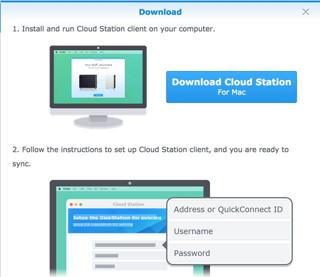

Aperçu
Cloud Station n'est pas seulement un logiciel de synchronisation sophistiqué multi-plateforme. Les utilisateurs peuvent s'en servir comme moyen de sauvegarde plus intelligent de leurs ordinateurs personnels. Voici certains bénéfices de l'utilisation de Cloud Station en tant que compagnon de sauvegarde. Tout d'abord, la duplication en temps réel fournit un RPO meilleur, une période plus courte dans laquelle les données pourraient être perdues (non récupérables) de votre PC à cause d'un incident majeur. Elle n'est pas seulement instantanée, elle vous aidera également à sauvegarder radicalement la bande passante, en comparaison de la sauvegarde traditionnelle qui utilise de plus grandes quantités de bande passante à un moment donné. Vous pouvez facilement filtrer les fichiers dans le même dossier que vous ne voulez pas sauvegarder, en configurant la taille ou le type de fichier sur votre PC client. Cloud Station peut également conserver jusqu'à 32 versions d'historique d'un fichier seul que Cloud Station vous autorise à restaurer vers un PC client depuis le serveur (NAS).
1. Paramétrer Cloud Station sur votre Synology NAS.
- Connectez-vous à DSM en utilisant un compte appartenant au groupe administrator.
- Lancez Cloud Station.
- Si vous n'avez pas activé le paramètre utilisateur à domicile, vous serez invité à le faire. Cliquez sur OK.
- Vous serez redirigé vers la page des paramètres utilisateur. Activez les utilisateurs homes et cliquez sur Appliquer.
- Maintenant revenez à Cloud Station et vous serez invité à l'activer. Cliquez sur Oui.
- Accédez à Privilèges et spécifiez quels utilisateurs pourront utiliser Cloud Station. Cliquez sur Enregistrer.
- Configurez un dossier partagé sur votre Synology NAS à des fins de sauvegarde. Pour ce faire, accédez au Panneau de configuration > Dossier partagé et cliquez sur Créer.
- Nommez votre dossier et remplissez les détails selon. Cliquez sur OK. Par exemple, nous nommerons le dossier Sauvegarder
- Dans l'onglet Permissions, spécifiez quels utilisateurs pourront accéder au dossier. Par exemple, nous donnerons les autorisations lecture/écriture admin au dossier. Cliquez sur OK.
- Accédez à Cloud Station > Paramètres > Partage et sélectionnez le dossier Sauvegarder, puis cliquez sur Activer.


2. Configurer Cloud Station sur votre Windows PC.
Suivez les étapes pour configurer Cloud Station sur votre Mac ou PC.
2,1 Pour PC
- Accédez à Cloud Station > Aperçu et cliquez sur le bouton Télécharger.
- Cliquez sur le bouton pour télécharger Cloud Station pour le PC Windows. (Vous pouvez également télécharger Cloud Station depuis le Centre de téléchargement Synology.)
- Lancez l'installateur sur votre ordinateur et suivez les instructions pour installer Cloud Station.
- Après l'installation, lancez Cloud Station sur votre ordinateur. Cliquez sur Démarrer maintenant.
- Entrez l'adresse du Synology NAS qui exécute Cloud Station (ou QuickConnect ID), le nom d'utilisateur et le mot de passe. (Vous pouvez également cliquer sur l'icône de recherche située à droite et Cloud Station recherchera automatiquement d'autres Synology NAS sur votre LAN.) Cliquez sur Suivant.
- Sélectionnez la manière dont vous souhaitez configurer votre tâche (ici, nous sélectionnons Configuration avancée car nous configurons un dossier spécialement pour la sauvegarde). Cliquez sur Suivant.
- Sélectionnez un dossier sur votre ordinateur à garder synchronisé avec le dossier Sauvegarder que vous avez précédemment créé sur votre Synology NAS. Cliquez sur Suivant.
- Cliquez sur Effectué pour achever l'installation.


Pour créer une autre tâche :
- Accédez à Cloud Station > Paramètres et activez un dossier partagé pour cette nouvelle tâche. Dans mon exemple, il s'agit de photo. Assurez-vous de disposer de privilèges en lecture/écriture pour photo.
- De retour sur Cloud Station sur votre PC, cliquez sur Créer.
- Sélectionnez un Synology NAS pour votre nouvelle tâche. Ici nous sélectionnons Synology NAS connecté car nous créons une autre tâche pour le même Synology NAS. Cliquez sur Suivant.
- Sélectionnez Configuration avancée et suivez le reste des instructions de l'assistant pour continuer la configuration.


2.2 Pour Mac
- Accédez à Cloud Station > Aperçu et cliquez sur le bouton Télécharger.
- Cliquez sur le bouton pour télécharger Cloud Station pour le Mac. (Vous pouvez également télécharger Cloud Station depuis le Centre de téléchargement Synology.) 
- Lancez l'installateur sur votre ordinateur et suivez les instructions pour installer Cloud Station.
- Après l'installation, lancez Cloud Station sur votre ordinateur. Cliquez sur Démarrer maintenant.
- Entrez l'adresse du Synology NAS qui exécute Cloud Station (ou QuickConnect ID), le nom d'utilisateur et le mot de passe. (Vous pouvez également cliquer sur l'icône de recherche située à droite et Cloud Station recherchera automatiquement d'autres Synology NAS sur votre LAN.) Cliquez sur Suivant.
- Sélectionnez la manière dont vous souhaitez configurer votre tâche (ici, nous sélectionnons Configuration avancée car nous configurons un dossier spécialement pour la sauvegarde. Cliquez sur Suivant.
- Sélectionnez un dossier sur votre ordinateur à garder synchronisé avec le dossier Sauvegarder que vous avez précédemment créé sur votre Synology NAS. Cliquez sur Suivant.
- Cliquez sur Effectué pour achever l'installation.


Pour créer une nouvelle tâche:
- Accédez à Cloud Station > Paramètres et activez un dossier partagé pour cette nouvelle tâche. Dans mon exemple, il s'agit de photo. Assurez-vous de disposer de privilèges en lecture/écriture pour photo.
- De retour sur Cloud Station sur votre ordinateur, cliquez sur Créer.
- Sélectionnez un Synology NAS pour votre nouvelle tâche. Ici nous sélectionnons Synology NAS connecté car nous créons une autre tâche pour le même Synology NAS. Cliquez sur Suivant.
- Sélectionnez Configuration avancée et suivez le reste des instructions de l'assistant pour continuer la configuration.


3. Retrouver les données de Cloud Station
Si vous avez supprimer ou écraser accidentellement un fichier, Cloud Station vous permet de le retrouver facilement.
4.1 Pour télécharger une version précédente d'un fichier synchronisé sur PC
- Cliquez sur l'icône Cloud Station dans la barre d'état de votre système et cliquez sur l'icône du dossier.
- Effectuez un clic droit sur votre fichier sélectionné puis choisissez Synology Cloud Station > Parcourir les versions précédentes.
- Trouvez la version que vous souhaitez télécharger et cliquez sur l'icône de téléchargement.
- Entrez le nom du fichier et choisissez la destination pour le sauvegarder.


4.1 Pour télécharger une version précédente d'un fichier synchronisé sur Mac
- Cliquez sur l'icône Cloud Station dans la barre d'état de votre système et cliquez sur l'icône du dossier.
- Effectuez un clic droit sur votre fichier sélectionné puis choisissez Synology Cloud Station > Parcourir les versions précédentes.
- Trouvez la version que vous souhaitez télécharger et cliquez sur l'icône de téléchargement.
- Entrez le nom du fichier et choisissez la destination pour le sauvegarder.


4.3 Pour télécharger une version précédente d'un fichier synchronisé depuis Cloud Station
- Accédez à Cloud Station > Historique des versions et sélectionnez le dossier Sauvegarder que vous avez précédemment créé.
- Sélectionnez le fichier que vous voulez retrouver et cliquez sur Action > Parcourir les versions précédentes.
- Sélectionnez les versions du fichier que vous voulez télécharger et cliquez sur Télécharger. Ou si vous êtes sûr que vous voulez que la version sélectionnée soit restaurée, cliquez sur Restaurer et elle écrasera votre version actuelle.


4. Remarques importantes
- Gardez toujours des historiques de versions au cas où un fichier est supprimé ou écrasé par accident.
- Dans les Paramètres généraux, vous pouvez configurer si un fichier sera pré-extrait de votre NAS ou supprimé sur votre NAS lorsque vous supprimez un fichier sur votre PC.
5. Davantage de protection de vos données
Pour façons supplémentaires de protection et de sauvegarde de vos données, cliquez ici pour voir les didacticiels détaillant les autres services de sauvegarde offerts sur DSM.